◈ Cesare 2025
Tag you about the career is mapping
CORE ACTIVE
搭建COZE智能体分析需求
KR1 推进AI赋能设计推动业务留存增长解决方案-召回弹窗设计指引案例
A COLLECTIOJ OF DESIGN
KX 通过 Coze 智能体拆解老用户召回承接弹窗需求，聚焦 2000+ 用户反馈，识别弹窗信息层级与全链路设计逻辑，输出贴合业务增长目标的可落地设计解决方案。
Coze智能体搭建
利用AI拆解分析需求,推导排版设计要点
利用AI拆解分析需求,推导排版设计要点： 需求背景：老用户召回承接弹窗，覆盖每日登录奖励领取、次日权益预览核心链路，核心业务目标为提升老用户留存率。设计思路：直接搭建 AI 智能体完成用户核心痛点深度拆解与分析，明确弹窗信息层级设计核心要点、梳理全链路设计逻辑，输出同时贴合业务增长目标与用户需求的可落地设计解决方案。
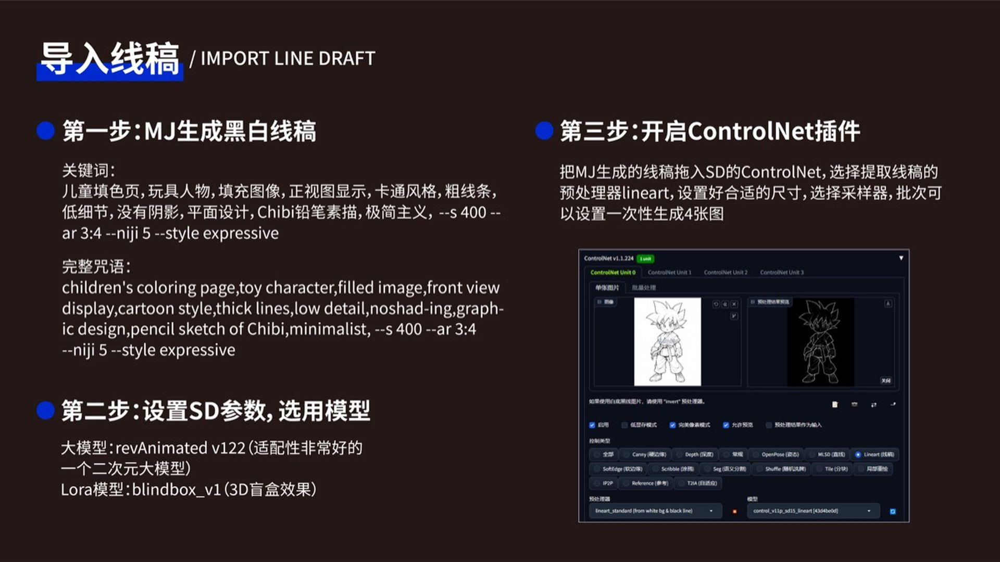
智能体输出·需求拆解 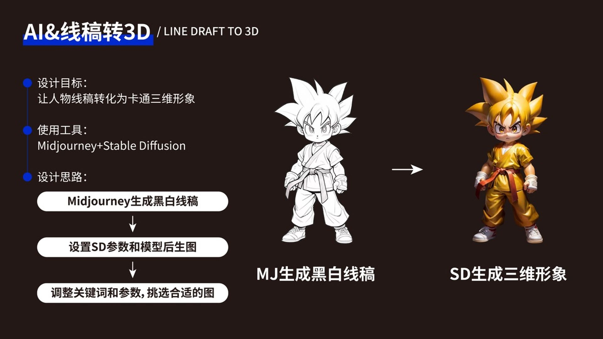
弹窗设计·信息层级
◈ Cesare 2025
Tag you about the career is mapping
CORE ACTIVE
重构用户浏览动线，强化入口引导
KR1 改版前:拉新瓶颈与布局错位
Reconstruct the user's browsing line and strengthen the entrance guidance.
KX 围绕搭讪按钮点击率、匹配成功转化率，贴合用户行为逻辑，强化场景引导，激活核心业务流量。
用户体验
改版前:拉新瓶颈与布局错位
改版前:拉新瓶颈与布局错位： 产品成熟处在拉新瓶颈，首页内容新增减缓，部分重复头像难以激活存量用户的浏览与互动意愿，制约了核心场景的转化效率。社交场景下用户优先通过头像和资料内容建立第一印象，此布局在当前产品周期相对局限。
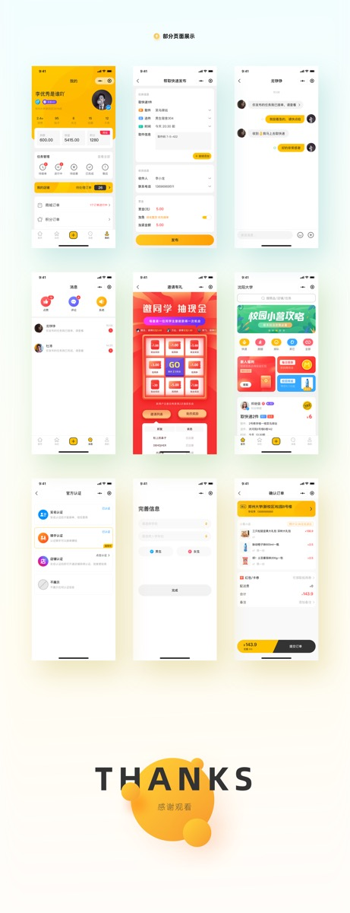
改版前·首页布局 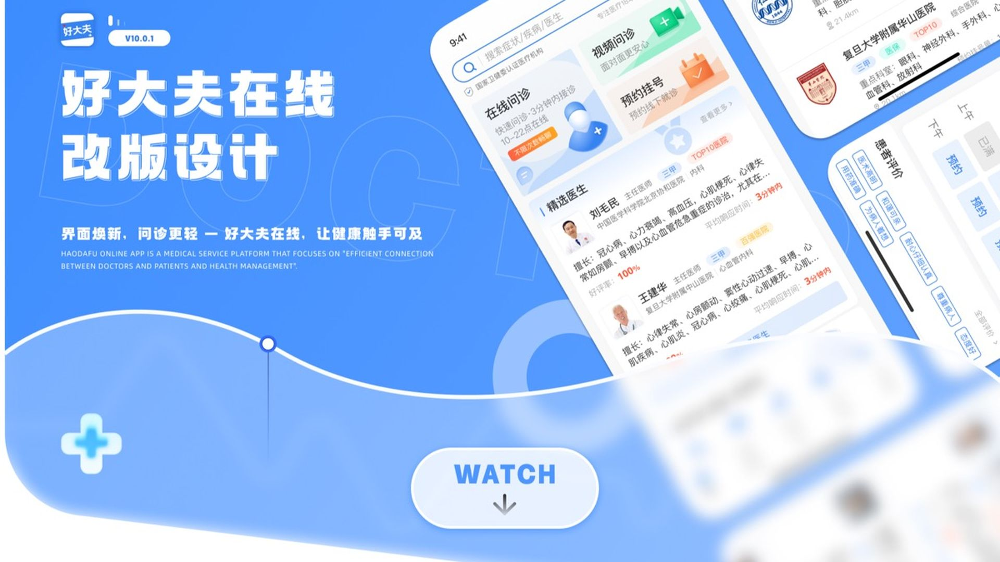
改版后·动线优化
◈ Cesare 2025
Tag you about the career is mapping
CORE ACTIVE
基于数据洞察.分析交互方案缺陷
KR2 围绕匹配成功转化率,诊断旧版交互方案缺陷,调整量质失衡与认知冲突
A COLLECTIOJ OF DESIGN
KX 消息量与匹配质量反向失衡，有效互动价值不足；交互逻辑不符合海外用户习惯，理解与学习成本偏高。
洞察数据问题
交互逻辑不符合海外用户习惯,理解成本偏高
交互逻辑不符合海外用户习惯,理解成本偏高： 数据层面显示，旧版滑动交互方案上线后消息发送总量提升 18.6%，匹配成功转化率较基线版本下降 9.3%，呈现量升质降的失衡状态。用户访谈显示海外社交用户对滑动交互的固有认知为“删除”或“收藏”，与“发送消息”的功能定义存在认知冲突，误操作率达 15.7%。
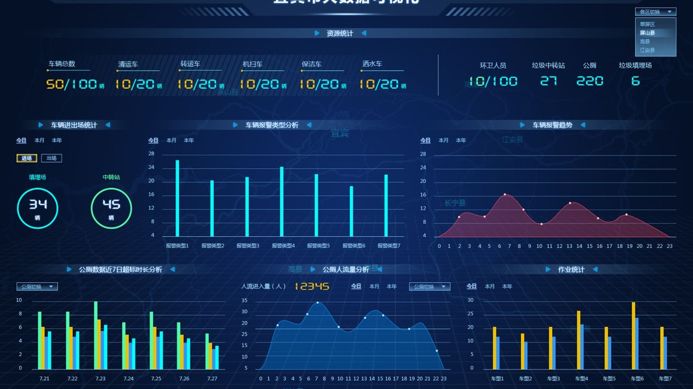
数据洞察·量质失衡 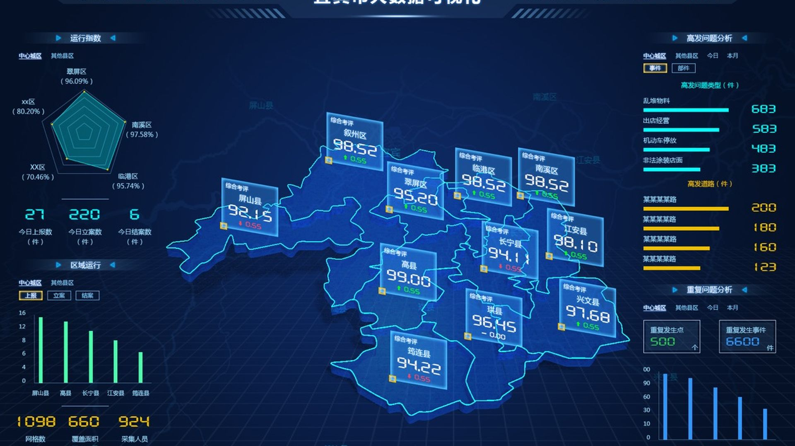
行为埋点·误操作率 18.6% 消息量提升
-9.3% 匹配转化率
15.7% 误操作率
体验设计
从用户反馈到设计策略,以数据驱动的体验升级路径
◈ Cesare 2025
Tag you about the career is mapping
CORE ACTIVE
发送消息后的关键交互路径探索
KR3 关注匹配成功转化率+消息量,搭讪交互最优路径探索,AIUX工作流应用
Exploration of key interaction paths after sending messages
KX 调用 AI 驱动的设计方案分析智能体，对 3 种差异化交互方案进行推导验证，结合实际落地数据完成最优方案判定。
AI分析设计策略
AI推导出当前条件下最优设计方案
AI推导出当前条件下最优设计方案： 设计需求背景：用户点击「搭讪」按钮后的交互决策路径（跳转聊天页 / 返回首页 / 停留当前页）直接影响互动转化与浏览效率。以核心业务诉求为底层基准，针对该交互场景的两套 UI 设计方案，从核心适配性、场景匹配度、体验效率、数据可验证性、落地兼容性五个维度展开对比分析。
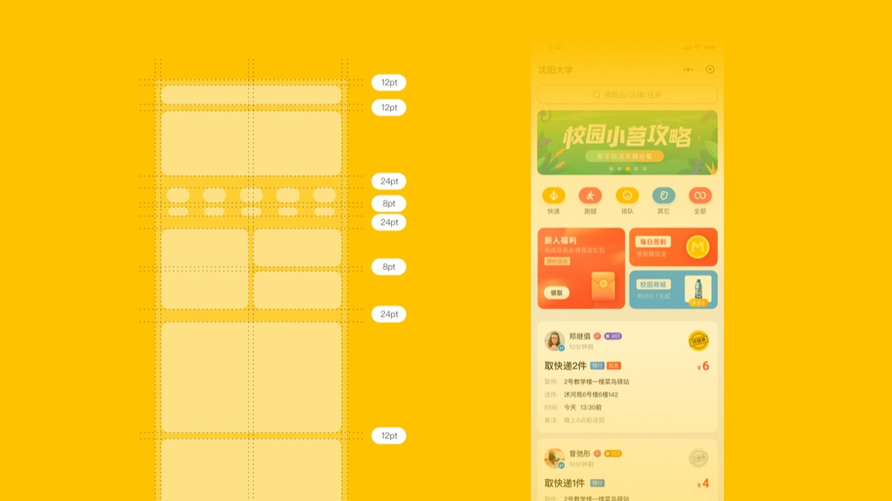
方案1·私聊页交互 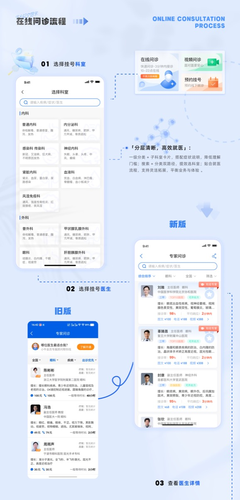
方案2·首页浏览 +22.4% 方案1 搭讪转化率
23.5 方案2 日均匹配数
结论：方案2全量上线 综合判定
◈ Cesare 2025
Tag you about the career is mapping
CORE ACTIVE
基于AIDA模型的高效转化设计
KR2 围绕关键指标,应用AIDA转化模型,实现设计动作推动数据正增长
A COLLECTIOJ OF DESIGN
KX 围绕关键指标，应用 AIDA 转化模型（Attention→Interest→Desire→Action）拆解转化漏斗，以设计动作推动数据正增长。
AIDA模型
转化强化:动效引导操作，降低最终点击门槛
转化强化:动效引导操作，降低最终点击门槛： 视觉吸引后，通过文案快速承接注意力，清晰传递连续七日登录领礼的核心权益。文案经 Coze 智能体结合用户痛点深度分析与优化；遵循设计建议，将转化按钮作为关键转化节点，通过针对性动效强化视觉引导，完成 注意—兴趣—行动 的完整闭环。
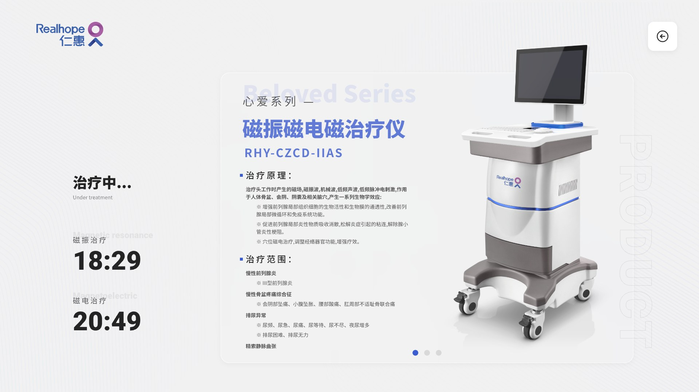
七日领礼·转化链路 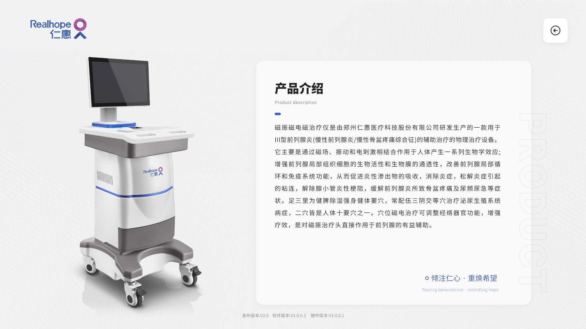
动效引导·转化按钮 +20.77% 点击转化率
+20.77% 七日留存率
业务价值 老用户回归留存提升
◈ Cesare 2025
Tag you about the career is mapping
CORE ACTIVE
AI辅助前置需求分析与用户研究
KR4 利用AI前置调研推导用户痛点&预警设计方案问题
A COLLECTIOJ OF DESIGN
KX 优化前项目计划以用户调研为切入洞察点，本次迭代引入 AI 辅助开展深度需求挖掘与方案预判，构建多元虚拟用户画像与模拟全路径用户旅程。
AI用户调研
模拟眼动仪测试结果：用户核心关注区域
模拟眼动仪测试结果：用户核心关注区域： 构建多元虚拟用户画像：覆盖专家型、任务型、技术型等角色，提炼场景痛点与隐性需求；引入对抗性角色校验，通过动态修正迭代画像。模拟全路径用户旅程与交互：设计含决策分支的多流程路径，梳理用户疑问并输出流程图与对话脚本，预判流程崩溃点并输出预警方案。
AI调研·虚拟用户画像 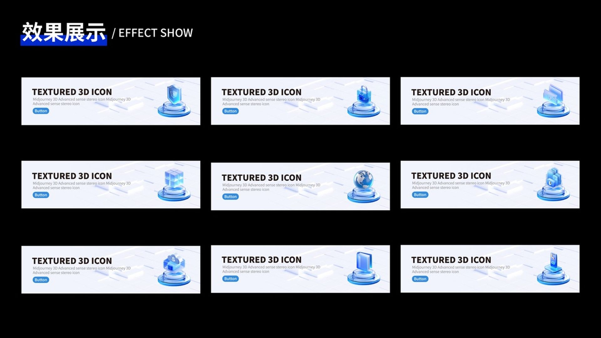
模拟眼动仪·关注区域
◈ Cesare 2025
Tag you about the career is mapping
CORE ACTIVE
探索AI技术和交互结合方案
KR2 探索AI辅助用户匹配话术推演、智能生成应对参考话术
A COLLECTIOJ OF DESIGN
KX 基于前期数据洞察与用户调研反馈，旧版交互方案虽提升操作便捷性，但引发沟通转化率下滑、用户沟通质量偏低的问题。引入 AI 智能话术辅助方案，协同产品、技术、运营多部门推进落地。
团队协同
发散→聚拢：定义问题·探索方案·解决问题
发散→聚拢：定义问题·探索方案·解决问题： 用户调研层面：虽然提升交互效率，但用户理解成本较高，不符合设计初衷；团队协同和AI技术结合层面：联动技术团队，探索设计和 AI 技术结合的交互方案；关注数据和用户行为：结合数据分析上线方案，总结落地方案经验和方法论。
AI话术·智能生成 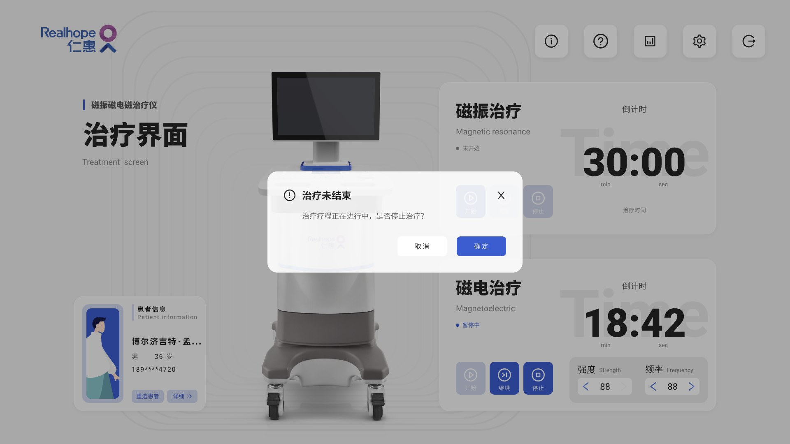
团队共创·工作流
AUX 设计
AI 前置调研 + 团队共创,探索设计与 AI 技术结合方案
◈ Cesare 2025
Tag you about the career is mapping
CORE ACTIVE
总结：AI辅助分析方案可行性
KR4 及时总结复盘关键经验,沉淀复用至其他业务流程
Using AI to help analyze the feasibility of the scheme
KX 依托智能体拓展可行性方案池，通过多维度评估筛选高价值落地方案；模拟产品上线后的用户反馈与业务数据表现，形成预演闭环。
AIUX工作流
AI 驱动的设计决策闭环
AI 驱动的设计决策闭环： 依托智能体拓展可行性方案池，通过多维度评估筛选出高价值落地方案；同时模拟产品上线后的用户反馈与业务数据表现，形成预演闭环；最终基于真实上线数据训练并迭代智能体，持续矫正用户画像与设计方向，构建 AI 推演—预演验证—数据反哺的全链路设计决策体系。传统流程获取结果周期 7D~14D，AI 驱动闭环缩短至 3D~5D。
传统流程·7D~14D 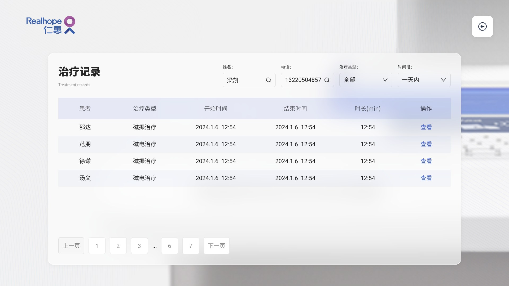
AI闭环·3D~5D -30% 周期缩短
3D~5D AI 驱动闭环
7D~14D 传统流程周期
◈ Cesare 2025
Tag you about the career is mapping
CORE ACTIVE
付费退出·挽回弹窗
KR5 围绕核心指标,关键节点增加交互触达干预
A COLLECTIOJ OF DESIGN
KX 再次通过用户调研得出结论，用户放弃支付两个主要原因：1. 权益未能打动用户（占比 24.6%）；2. 价格过高，用户放弃购买（51.2%，选中优先解决）。
关交互链路节点设计
触发付费跳出挽回弹窗,增加流程干预
触发付费跳出挽回弹窗,增加流程干预： 用户点击付费过程中跳出，在退出流程增加一个挽回付费弹窗干预，通过优惠券形式干预用户退出。针对“价格过高”原因，优惠券可有效让用户重新决策，并加入使用倒计时强化紧迫感。
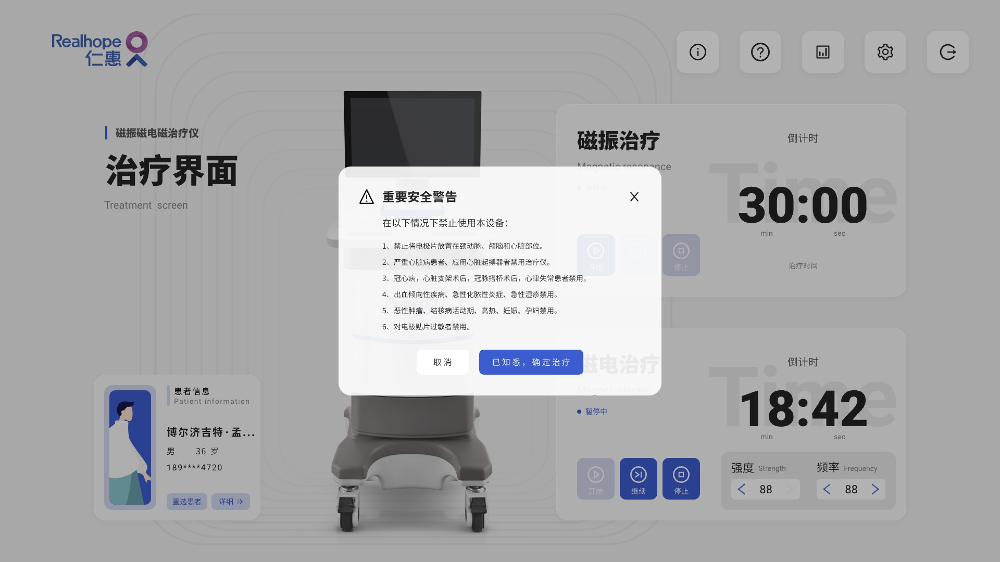
挽回弹窗·优惠券干预 关键节点·触达干预 +4.42% 用户重新付费率
51.2% 价格敏感占比
业务价值 营收额外提升
◈ Cesare 2025
Tag you about the career is mapping
CORE ACTIVE
总结AI数据驱动的设计方法论
KR4 及时总结复盘关键经验,沉淀复用至其他业务流程
A COLLECTIOJ OF DESIGN
KX 数据分析能力是高阶设计师的核心竞争力。基于双钻模型做适配性优化与迭代，构建 ADM·妙木山模型（AI Data Design Model），形成 AI 赋能、数据驱动、设计落地的全链路高阶设计方法论。
总结可复用经验模型
洞察→发现→探索→矫正
洞察→发现→探索→矫正： 洞察数据存在的问题，聚焦设计可干预问题；针对问题提出解决思路，利用 AI 枚举设计解决方案并挑选可行性较强的方案；关注数据判定改动效果，根据数据结果矫正设计方向，判断设计方案是否有效；复盘数据并做总结，沉淀可复用经验模型。
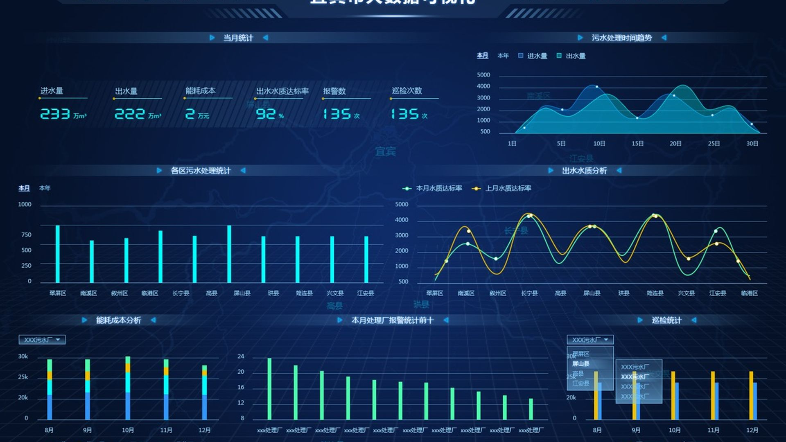
双钻模型·适配优化 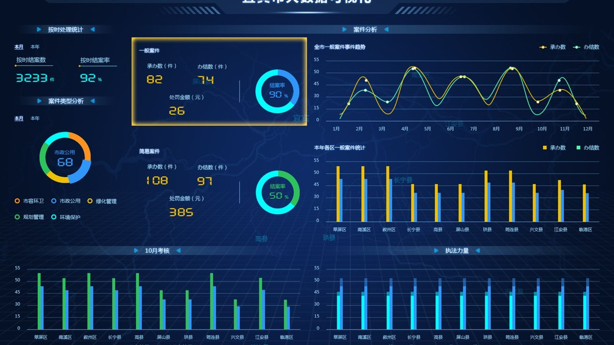
ADM·妙木山模型
◈ Cesare 2025
Tag you about the career is mapping
CORE ACTIVE
团队共创 · AI 辅助生成动效工作流
KR1 推进AI赋能设计推动业务留存增长解决方案-召回弹窗设计指引案例
A COLLECTIOJ OF DESIGN
KX 团队共创·智能体搭建：利用搭建的智能体体系，形成 AI 驱动的需求分析标准化工作流，全方位提升团队对业务需求的理解深度与精准度。
团队共创
多环节动效输出·可再生成 30%
多环节动效输出·可再生成 30%： 利用 AI 生成 3 种动效方案，可再生成 30%，支持团队快速迭代。该思路主要弥补了当前 AI 工具无法直接生成标准化 UI 设计稿的能力短板，明年如果有更好用的 AI 工具，这个工作流节点可以进一步优化。
智能体体系·标准化工作流 动效方案·可再生成
30+ AI 技能项
2000+ 设计系统条目
$2000+ 客户资产价值
◈ Cesare 2025
Tag you about the career is mapping
CORE ACTIVE
设计价值量化呈现
KR3 关注匹配成功转化率+消息量,搭讪交互最优路径探索,AIUX工作流应用
A COLLECTIOJ OF DESIGN
KX 全链路设计成果：30+ 产品、2000+ 系统条目、$2000+ 客户资产。
设计价值
从概念到交付的全链路量化
从概念到交付的全链路量化： 覆盖 AI 设计全链路 30+ 项技能，从概念到交付。通过埋点数据 + 用户反馈双通道验证设计效果，DAU +23.6%、NPS 6.8→8.2，以设计驱动数据提升。
全链路·30+ 技能 成果量化·2000+ 条目
30+ 主导产品
2000+ 设计系统条目
$2000+ 客户资产
AI 能力
设计价值量化呈现,沉淀可复用的高阶设计方法论